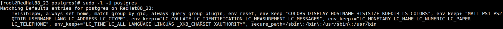

Before backing up the database, you need to check and enable the sudo permission of the database installation user. Otherwise, some commands will fail to be executed.
Procedure
- Use PuTTY to log in to the PostgreSQL database host.
- Run the following command to check whether the user has the sudo permission:
sudo -l -U Database installation user
- If the user has the sudo permission, the list of commands that the user can run is displayed. No further action is required.

- If the user does not have the sudo permission, a message is displayed, indicating that the user cannot run the sudo commands. Go to 3.

- If the user has the sudo permission, the list of commands that the user can run is displayed. No further action is required.
- Enable the sudo permission of the database installation user.
Switch to user root, run the visudo command to open the configuration file, and add the following configuration to the end of the file:
Name of the database installation user ALL=(ALL) NOPASSWD:ALL